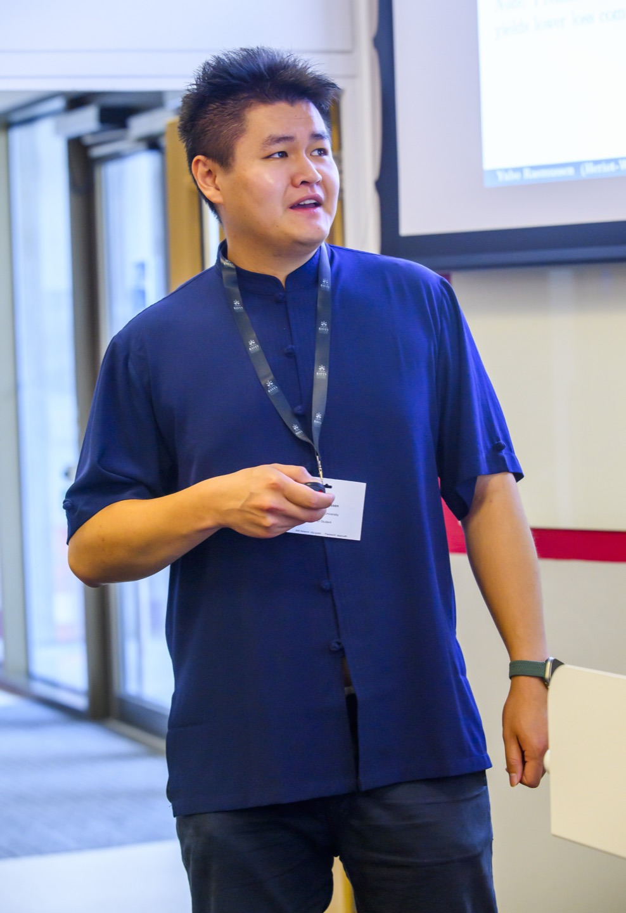

Final-year PhD candidate · Open to industry roles
Yubo Zhou Rasmussen
Actuarial mathematician building neural-network-based models for insurance claims.
I am a final-year PhD candidate in Actuarial Mathematics at Heriot-Watt University, supervised by Dr. Fraser Daly and Dr. George Tzougas and funded by an EPSRC scholarship. My research develops machine-learning models for insurance claims — particularly combined actuarial neural networks that retain the interpretability of classical regression while gaining the flexibility of deep learning.
I am looking for data science, quantitative risk, or actuarial roles starting autumn 2026.

About
I studied Economics and Mathematics at the University of Edinburgh, where I served as President of the Table Tennis Club, before moving to Heriot-Watt for an MSc in Actuarial Science (Pass with Distinction) and earning Institute and Faculty of Actuaries exemptions in CB1, CB2, CM1, CM2, CS1, and CS2.
My PhD sits at the intersection of actuarial science and machine learning. I build combined actuarial neural networks — models that embed classical regression inside a deep-learning framework to keep the interpretability insurers rely on while gaining the flexibility neural networks provide. Applications include claims severity modelling and forecasting climate-related claim costs in property insurance.
Alongside the PhD I author IFoA exam study materials for ACTEX, teach MSc modules at Heriot-Watt, and have two IFoA exams to go before qualifying as a Fellow. Outside work I coach table tennis, read too much psychology and economics, listen to Freakonomics Radio, and dabble in day trading. I am fluent in English, Chinese, and Danish, and speak some German.
Skills & Research Areas
Research areas
- Actuarial mathematics
- Combined actuarial neural networks
- Claims severity modelling
- Climate-related claim costs
- Stochastic volatility
- Extreme value analysis
- Survival models
Languages & tools
- R
- Quarto
- Python
- LaTeX
- VBA
- SQL
- Git
- Unix
Actuarial (IFoA)
Passed CP2, CP3; exemptions below. Two exams from Fellow.
- CB1
- CB2
- CM1
- CM2
- CS1
- CS2
- CP2 ✓
- CP3 ✓
Spoken languages
- English
- Chinese
- Danish
- German (school)
Experience
-
Jul 2023 — present
Actuarial Problem Analyst & Author · ACTEX
Headhunted by ACTEX, a US provider of study materials for Institute and Faculty of Actuaries exams. Developed syllabi for CS1 and CS2 and am expanding coverage with a bespoke syllabus for SP5 (Investment and Finance Principles).
-
Jan 2023 — present
Mathematics Teaching Assistant · Heriot-Watt University
Teach Machine Learning for Risk and Insurance at MSc level, delivering lectures on deep neural networks, ensemble learning, random forests, and bottleneck neural networks. Also tutor undergraduate modules in time series, survival models, and quantitative methods.
-
Sep 2022 — present
PhD Candidate, Actuarial Mathematics · Heriot-Watt University
EPSRC-funded research on machine-learning models for insurance claims. Developing combined actuarial neural networks for claims severity and climate-related claim costs in property insurance. Supervised by Dr. Fraser Daly and Dr. George Tzougas.
-
Mar 2022 — Sep 2022
Actuarial Analyst · Canada Life
Produced model points for Solvency II and IFRS month-end valuation processes. Supported testing and sign-off of Prophet model releases, ensuring process controls were adhered to, and maintained documentation for audit and financial reporting. Offered a permanent role after four months; left to pursue the PhD.
-
Sep 2020 — Sep 2021
MSc Actuarial Science · Heriot-Watt University
Pass with Distinction. Dissertation on investment guarantees using stochastic volatility models. Took four additional courses to earn IFoA exemptions in CB1, CB2, CM1, CM2, CS1, and CS2.
-
Sep 2018 — Sep 2023
Head Coach · Edinburgh University Table Tennis Club
Contracted annually as Head Coach across five consecutive seasons. UKCC Level 2 coach; certified in Emergency First Aid and Protecting Vulnerable Children; PVG cleared.
-
Sep 2016 — May 2020
MA (Hons) Economics and Mathematics · University of Edinburgh
Second Class, Upper Division. Extensive coursework in econometrics and linear programming. President of the Table Tennis Club; member of the Economics Society and the Investment and Trading Club.
Selected Publications
-
2025
Neural network-based models for mean and dispersion: Application to Greek property insurance losses
Submitted to Annals of Actuarial Science.
-
2025
Translators' allocation of cognitive resources in two translation directions: A study using eye-tracking and keystroke logging
Applied Sciences.
-
2024
Update from the UK Asbestos Working Party
British Actuarial Journal.
-
2023
Developing the Public Health Scotland whole system model: A report
ESGI Working Paper, International Centre for Mathematical Sciences.
-
2022
Studying interpreters' stress in crisis communication: Evidence from multimodal technology of eye-tracking, heart rate and galvanic skin response
The Translator.
Talks & Teaching
Selected talks
- Mar 2026 Poster, AI in Risk Assessment and Mitigation, International Centre for Mathematical Sciences, Edinburgh.
- Jan 2026 Facilitator, Data Study Group, Alan Turing Institute, London — forecasting labour-market indicators from granular job-posting data.
- Jul 2025 "Climate-Related Claim Costs: A Sub-Neural Network Approach for Forecasting Climate-Related Claim Costs in Property Insurance", Insurance Data Science 2025, City St George's University of London.
- Aug 2024 "A Combined Neural Network Approach for Forecasting Climate-Related Claim Costs in Property Insurance", Scandinavian Actuarial Conference, University of Copenhagen.
- Sep 2023 Invited talk, "Neural Network Embedding of the Pareto Regression Model for Claims Severity", Fields–CFI Conference on Recent Advances in Mathematical Finance and Insurance, University of Toronto.
- Apr 2023 "Neural Networks in Insurance", SIAM Student Chapter Conference, University of Manchester — awarded 2nd prize for best student talk.
Teaching (Heriot-Watt)
- 2023 — present F71RA Machine Learning for Risk and Insurance 1 (MSc).
- 2025 — present F70TS Time Series and Machine Learning (UG).
- 2025 — present F70SU Survival Models (UG).
- 2024 F78QT Quantitative Methods 1 (UG).
- 2023 — 2025 MathsGym drop-in support (UG).
Contact
The best way to reach me is by email at yubosej@gmail.com. I am happy to chat about research, industry roles, or collaboration.